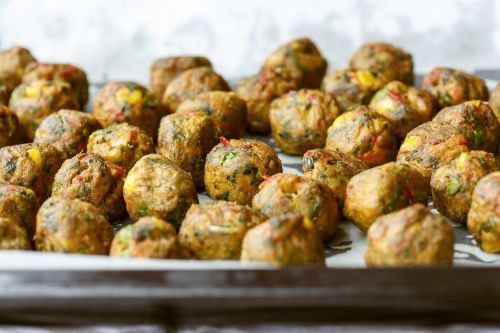

Vegan Meatballs

Description
These plant-based meatballs with spinach, nutritional yeast, and vegan bread crumbs deliver lots of flavor. We like more of a crunchy, dry meatball so these are baked in the oven without sauce but they can be simmered on the stovetop in marinara sauce, as well.
Store cooked meatballs in an airtight container in the freezer for up to 2 months.
Ingredients
- 1 (10 ounce) package frozen chopped spinach
- 2 tablespoons water
- 2 (16 ounce) packages plant-based ground beef
- 3 quarters cup nutritional yeast
- 3 quearters cup vegan bread crumbs
- 4 tablespoons tomato paste
- 5 cloves garlic, minced
- 1 tablespoon dried oregano leaves
- 1 tablespoon dried basil leaves
- 1 teaspoon onion powder
- 1/2 teaspoon salt
- 1/2 teaspoon ground black pepper
- 4 tablespoons olive oil, divided, or more as needed
Back